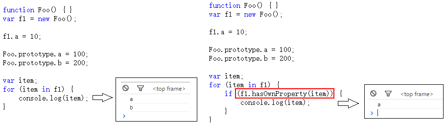

<!DOCTYPE html>
<html>
<head><meta name="generator" content="Hexo 3.8.0">
  <meta charset="utf-8">
  

  
  <title>从原型到原型链再到继承 | Gzqqqqq</title>
  <meta name="viewport" content="width=device-width, initial-scale=1, maximum-scale=1">
  
  
  
  <meta name="description" content="“一切（引用类型）都是对象”。对象——若干属性的集合。（undefined, number, string, boolean）属于简单的值类型，不是对象 函数、数组、对象、null、new Number(10)都是对象。他们都是引用类型。 数组是对象，函数是对象，对象还是对象。对象里面的一切都是属性，只有属性，没有方法。因为方法也是一种属性。因为它的属性表示为键值对的形式。 判断一个变量是不是对象">
<meta name="keywords" content="javascript">
<meta property="og:type" content="article">
<meta property="og:title" content="从原型到原型链再到继承">
<meta property="og:url" content="http://Gzqqqqq.github.io/public/2019/03/30/从原型到原型链再到继承/index.html">
<meta property="og:site_name" content="Gzqqqqq">
<meta property="og:description" content="“一切（引用类型）都是对象”。对象——若干属性的集合。（undefined, number, string, boolean）属于简单的值类型，不是对象 函数、数组、对象、null、new Number(10)都是对象。他们都是引用类型。 数组是对象，函数是对象，对象还是对象。对象里面的一切都是属性，只有属性，没有方法。因为方法也是一种属性。因为它的属性表示为键值对的形式。 判断一个变量是不是对象">
<meta property="og:locale" content="default">
<meta property="og:image" content="http://gzqqqqq.github.io/public/2019/03/30/从原型到原型链再到继承/函数的原型prototype.png">
<meta property="og:image" content="http://gzqqqqq.github.io/public/2019/03/30/从原型到原型链再到继承/Object的原型prototype.png">
<meta property="og:image" content="http://gzqqqqq.github.io/public/2019/03/30/从原型到原型链再到继承/自定义函数的原型prototype.png">
<meta property="og:image" content="http://gzqqqqq.github.io/public/2019/03/30/从原型到原型链再到继承/Object.prototype示意图.png">
<meta property="og:image" content="http://gzqqqqq.github.io/public/2019/03/30/从原型到原型链再到继承/prototype的__proto__示意图.png">
<meta property="og:image" content="http://gzqqqqq.github.io/public/2019/03/30/从原型到原型链再到继承/函数的__proto__示意图.png">
<meta property="og:image" content="http://gzqqqqq.github.io/public/2019/03/30/从原型到原型链再到继承/函数prototype的__proto__示意图.png">
<meta property="og:image" content="http://gzqqqqq.github.io/public/2019/03/30/从原型到原型链再到继承/Instanceof判断规则.png">
<meta property="og:image" content="http://gzqqqqq.github.io/public/2019/03/30/从原型到原型链再到继承/Instanceof判断.png">
<meta property="og:image" content="http://gzqqqqq.github.io/public/2019/03/30/从原型到原型链再到继承/原型链1.png">
<meta property="og:image" content="http://gzqqqqq.github.io/public/2019/03/30/从原型到原型链再到继承/区分基本属性和原型属性.png">
<meta property="og:image" content="http://gzqqqqq.github.io/public/2019/03/30/从原型到原型链再到继承/hasOwnProperty.png">
<meta property="og:image" content="http://gzqqqqq.github.io/public/2019/03/30/从原型到原型链再到继承/Function中的prototype.png">
<meta property="og:image" content="http://gzqqqqq.github.io/public/2019/03/30/从原型到原型链再到继承/修改1.png">
<meta property="og:image" content="http://gzqqqqq.github.io/public/2019/03/30/从原型到原型链再到继承/修改2.png">
<meta property="og:image" content="http://gzqqqqq.github.io/public/2019/03/30/从原型到原型链再到继承/创建.png">
<meta property="og:updated_time" content="2019-03-30T09:08:02.888Z">
<meta name="twitter:card" content="summary">
<meta name="twitter:title" content="从原型到原型链再到继承">
<meta name="twitter:description" content="“一切（引用类型）都是对象”。对象——若干属性的集合。（undefined, number, string, boolean）属于简单的值类型，不是对象 函数、数组、对象、null、new Number(10)都是对象。他们都是引用类型。 数组是对象，函数是对象，对象还是对象。对象里面的一切都是属性，只有属性，没有方法。因为方法也是一种属性。因为它的属性表示为键值对的形式。 判断一个变量是不是对象">
<meta name="twitter:image" content="http://gzqqqqq.github.io/public/2019/03/30/从原型到原型链再到继承/函数的原型prototype.png">
  
    <link rel="alternate" href="/atom.xml" title="Gzqqqqq" type="application/atom+xml">
  
  
    <link rel="icon" href="/images/default-avatar.jpeg">
  
  
    <link href="//fonts.googleapis.com/css?family=Source+Code+Pro" rel="stylesheet" type="text/css">
  
  <link rel="stylesheet" href="/css/style.css">
  <link rel="stylesheet" href="/css/highlight.css">
</head>
</html>
<body>
  <div id="fullpage" class="mobile-nav-right">
    
      <div id="wrapper" title="图片来自网络">
    
    
      <header id="header">
  <div id="nav-toggle" class="nav-toggle"></div>
  <div class="head-box global-width">
    <nav class="nav-box nav-right">
      
        <a class="nav-item" href="/" title>首页</a>
      
        <a class="nav-item" href="/archives" title>归档</a>
      
    </nav>
  </div>
</header>
      <div id="middlecontent" title class="global-width sidebar-right">
        <section id="main"><article id="post-从原型到原型链再到继承" class="article global-container article-type-post" itemscope itemprop="blogPost">
  
    <header class="article-header">
      
  
    <h1 class="article-title" itemprop="name">
      从原型到原型链再到继承
    </h1>
  

    </header>
  
  <div class="article-meta">
    <a href="/2019/03/30/从原型到原型链再到继承/" class="article-date">
  <time datetime="2019-03-30T08:47:59.000Z" itemprop="datePublished">2019-03-30</time>
</a>
    
    
  <ul class="article-tag-list"><li class="article-tag-list-item"><a class="article-tag-list-link" href="/tags/javascript/">javascript</a></li></ul>

  </div>
  
    <span id="busuanzi_container_page_pv">
      本文总阅读量<span id="busuanzi_value_page_pv"></span>次
    </span>
  

  <div class="article-inner">
    
    <div class="article-content article-content-doorframe" itemprop="articleBody">
      
       
  	
  	  <h3 id="“一切（引用类型）都是对象”。"><a href="#“一切（引用类型）都是对象”。" class="headerlink" title="“一切（引用类型）都是对象”。"></a>“一切（引用类型）都是对象”。</h3><h3 id="对象——若干属性的集合。"><a href="#对象——若干属性的集合。" class="headerlink" title="对象——若干属性的集合。"></a>对象——若干属性的集合。</h3><p>（undefined, number, string, boolean）属于简单的<strong>值类型</strong>，不是对象</p>
<p>函数、数组、对象、null、new Number(10)都是对象。他们都是<strong>引用类型</strong>。</p>
<p>数组是对象，<strong>函数是对象</strong>，对象还是对象。对象里面的一切都是属性，只有属性，没有方法。因为方法也是一种属性。因为它的属性表示为键值对的形式。</p>
<p>判断一个变量是不是对象非常简单。值类型的类型判断用typeof，引用类型的类型判断用instanceof。</p>
<div class="highlight-box" autocomplete="off" autocorrect="off" autocapitalize="off" spellcheck="false" contenteditable="true" data-rel="BASH"><figure class="iseeu highlight /bash"><table><tr><td class="gutter"><pre><span class="line">1</span><br><span class="line">2</span><br></pre></td><td class="code"><pre><span class="line">var fn = <span class="function"><span class="title">function</span></span> () &#123; &#125;;</span><br><span class="line">console.log(fn instanceof Object);  // <span class="literal">true</span></span><br></pre></td></tr></table></figure></div>
<hr>
<h3 id="对象都是通过函数创建的"><a href="#对象都是通过函数创建的" class="headerlink" title="对象都是通过函数创建的"></a>对象都是通过函数创建的</h3><p>例如：<br><div class="highlight-box" autocomplete="off" autocorrect="off" autocapitalize="off" spellcheck="false" contenteditable="true" data-rel="BASH"><figure class="iseeu highlight /bash"><table><tr><td class="gutter"><pre><span class="line">1</span><br><span class="line">2</span><br><span class="line">3</span><br><span class="line">4</span><br><span class="line">5</span><br><span class="line">6</span><br><span class="line">7</span><br><span class="line">8</span><br></pre></td><td class="code"><pre><span class="line"><span class="keyword">function</span> <span class="function"><span class="title">Fn</span></span>() &#123;</span><br><span class="line">    this.name = <span class="string">'王福朋'</span>;</span><br><span class="line">    this.year = 1988;</span><br><span class="line">&#125;</span><br><span class="line">var fn1 = new Fn();</span><br><span class="line"></span><br><span class="line">console.log(typeof (fn1));     // object</span><br><span class="line">console.log(typeof (Fn));      // <span class="keyword">function</span></span><br></pre></td></tr></table></figure></div></p>
<div class="highlight-box" autocomplete="off" autocorrect="off" autocapitalize="off" spellcheck="false" contenteditable="true" data-rel="BASH"><figure class="iseeu highlight /bash"><table><tr><td class="gutter"><pre><span class="line">1</span><br><span class="line">2</span><br><span class="line">3</span><br><span class="line">4</span><br><span class="line">5</span><br><span class="line">6</span><br><span class="line">7</span><br><span class="line">8</span><br><span class="line">9</span><br><span class="line">10</span><br><span class="line">11</span><br><span class="line">12</span><br><span class="line">13</span><br></pre></td><td class="code"><pre><span class="line">var obj = new Object();</span><br><span class="line">obj.a = 10;</span><br><span class="line">obj.b = 20;</span><br><span class="line"></span><br><span class="line">var arr = new Array();</span><br><span class="line">arr[0] = 5;</span><br><span class="line">arr[1] = <span class="string">'x'</span>;</span><br><span class="line">arr[2] = <span class="literal">true</span>;</span><br><span class="line"></span><br><span class="line">console.log(typeof (obj));     // object</span><br><span class="line">console.log(typeof (arr));     // object</span><br><span class="line">console.log(typeof (Object));  // <span class="keyword">function</span></span><br><span class="line">console.log(typeof (Array));   // <span class="keyword">function</span></span><br></pre></td></tr></table></figure></div>
<hr>
<h3 id="prototype原型"><a href="#prototype原型" class="headerlink" title="prototype原型"></a>prototype原型</h3><p>函数也是一种对象。他也是属性的集合。javascript默认的给函数一个属性 <strong>prototype</strong> ，<strong>每个函数都有</strong>一个属性叫做prototype(原型)。</p>
<p>这个<strong>prototype</strong> 的属性值是一个<strong>对象（是属性的集合）</strong>，默认的只有一个叫做constructor的属性，指向这个函数本身。</p>
<p></p>
<p>如上图，SuperType是是一个函数，右侧的方框就是它的原型。</p>
<p>原型既然作为对象，属性的集合，则里面的内容肯定不止constructor一个，他可以自定义的增加许多属性。例如Object函数中的原型对象prototype里面，就有好几个其他属性。</p>
<p></p>
<p>你也可以在自己自定义的方法的prototype中新增自己的属性</p>
<p></p>
<hr>
<h3 id="隐式原型-proto"><a href="#隐式原型-proto" class="headerlink" title="隐式原型__proto__"></a>隐式原型__proto__</h3><p>Fn是一个函数，fn对象是从Fn函数new出来的，这样fn对象就可以调用Fn.prototype中的属性。</p>
<p>因为<strong>每个对象都有</strong>一个隐藏的属性——“__proto__”，这个属性引用了创建这个对象的函数的prototype。即：<strong>fn.__proto__ === Fn.prototype</strong></p>
<div class="highlight-box" autocomplete="off" autocorrect="off" autocapitalize="off" spellcheck="false" contenteditable="true" data-rel="BASH"><figure class="iseeu highlight /bash"><table><tr><td class="gutter"><pre><span class="line">1</span><br><span class="line">2</span><br><span class="line">3</span><br><span class="line">4</span><br><span class="line">5</span><br><span class="line">6</span><br><span class="line">7</span><br><span class="line">8</span><br><span class="line">9</span><br><span class="line">10</span><br><span class="line">11</span><br><span class="line">12</span><br></pre></td><td class="code"><pre><span class="line"><span class="keyword">function</span> <span class="function"><span class="title">Fn</span></span>() &#123; &#125;</span><br><span class="line"></span><br><span class="line">Fn.prototype.name = <span class="string">'王福朋'</span>;</span><br><span class="line">Fn.prototype.getYear = <span class="function"><span class="title">function</span></span> () &#123;</span><br><span class="line">    <span class="built_in">return</span> 1988;</span><br><span class="line">&#125;;</span><br><span class="line"></span><br><span class="line">var fn = new Fn();</span><br><span class="line">console.log(fn.name);</span><br><span class="line">console.log(fn.getYear());</span><br><span class="line"></span><br><span class="line">console.log(fn.__proto__ === Fn.prototype);   //<span class="literal">true</span></span><br></pre></td></tr></table></figure></div>
<p>obj这个对象本质上是被Object函数创建的，因此obj.__proto__ ===  Object.prototype。我们可以用一个图来表示。</p>
<p></p>
<p>即，<strong>每个对象都有一个<strong>proto</strong>属性，指向创建该对象的函数的prototype。</strong></p>
<p>自定义函数的prototype本质上就是和 var obj = {} 是一样的，都是被Object创建一个对象，所以它的__proto__指向的就是Object.prototype。</p>
<p><strong>但是Object函数的prototype属性确实一个特例——它的<strong>proto</strong>指向的是null</strong></p>
<p></p>
<h3 id="函数也是一个对象，所以函数也有proto属性"><a href="#函数也是一个对象，所以函数也有proto属性" class="headerlink" title="函数也是一个对象，所以函数也有proto属性"></a>函数也是一个对象，所以函数也有<strong>proto</strong>属性</h3><p>函数是被Function创建出来的，所以函数的__proto__属性指向的是Function的prototype。即 <strong>Object.__proto__ === Function.prototype</strong></p>
<p></p>
<p><strong>注意</strong>:Function也是一个函数，函数是一种对象，也有__proto__属性。既然是函数，那么它一定是被Function创建。所以——Function是被自身创建的。所以它的__proto__指向了自身的Prototype。即 <strong>Function.__proto__ === Function.prototype</strong></p>
<p>Function.prototype是一个对象（属性的集合），它的__proto__也指向Object.prototype<br>如下图：</p>
<p></p>
<hr>
<h3 id="instanceof"><a href="#instanceof" class="headerlink" title="instanceof"></a>instanceof</h3><p><strong>instanceof表示的就是一种继承关系，或者原型链的结构</strong></p>
<p>通过typeof判断变量是否为string/number/boolean，但是typeof在判断到引用类型的时候，返回值只有object/function，因此这时就需要用到<strong>instanceof</strong>。</p>
<div class="highlight-box" autocomplete="off" autocorrect="off" autocapitalize="off" spellcheck="false" contenteditable="true" data-rel="BASH"><figure class="iseeu highlight /bash"><table><tr><td class="gutter"><pre><span class="line">1</span><br><span class="line">2</span><br><span class="line">3</span><br><span class="line">4</span><br><span class="line">5</span><br></pre></td><td class="code"><pre><span class="line"><span class="keyword">function</span> <span class="function"><span class="title">Foo</span></span>()&#123;&#125;</span><br><span class="line">var f1 = new Foo();</span><br><span class="line"></span><br><span class="line">console.log(f1 instanceof Foo);       //<span class="literal">true</span></span><br><span class="line">console.log(f1 instanceof Object);   //<span class="literal">true</span></span><br></pre></td></tr></table></figure></div>
<h4 id="instanceof的判断规则"><a href="#instanceof的判断规则" class="headerlink" title="instanceof的判断规则"></a>instanceof的判断规则</h4><p>Instanceof运算符的第一个变量是<strong>一个对象</strong>，暂时称为A；第二个变量一般是<strong>一个函数</strong>，暂时称为B。</p>
<p>Instanceof的判断规则是：沿着 <strong>A的__proto__</strong> 这条线来找，同时沿 <strong>着B的prototype</strong> 这条线来找，如果两条线能找到同一个引用，即同一个对象，那么就返回true。如果找到终点还未重合，则返回false。</p>
<p></p>
<p>更多例子：</p>
<div class="highlight-box" autocomplete="off" autocorrect="off" autocapitalize="off" spellcheck="false" contenteditable="true" data-rel="BASH"><figure class="iseeu highlight /bash"><table><tr><td class="gutter"><pre><span class="line">1</span><br><span class="line">2</span><br><span class="line">3</span><br></pre></td><td class="code"><pre><span class="line">console.log(Object instanceof Function);   //<span class="literal">true</span></span><br><span class="line">console.log(Function instanceof Object);   //<span class="literal">true</span></span><br><span class="line">console.log(Function instanceof Function);   //<span class="literal">true</span></span><br></pre></td></tr></table></figure></div>
<p></p>
<hr>
<h3 id="原型链（继承）"><a href="#原型链（继承）" class="headerlink" title="原型链（继承）"></a>原型链（继承）</h3><h4 id="javascript中的继承是通过原型链来体现的"><a href="#javascript中的继承是通过原型链来体现的" class="headerlink" title="javascript中的继承是通过原型链来体现的"></a>javascript中的继承是通过原型链来体现的</h4><p>例子：</p>
<div class="highlight-box" autocomplete="off" autocorrect="off" autocapitalize="off" spellcheck="false" contenteditable="true" data-rel="BASH"><figure class="iseeu highlight /bash"><table><tr><td class="gutter"><pre><span class="line">1</span><br><span class="line">2</span><br><span class="line">3</span><br><span class="line">4</span><br><span class="line">5</span><br><span class="line">6</span><br><span class="line">7</span><br><span class="line">8</span><br><span class="line">9</span><br><span class="line">10</span><br></pre></td><td class="code"><pre><span class="line"><span class="keyword">function</span> <span class="function"><span class="title">Foo</span></span>()&#123;&#125;</span><br><span class="line">var f1 = new Foo();</span><br><span class="line">f1.a = 10;</span><br><span class="line"></span><br><span class="line">Foo.prototype.a = 100;</span><br><span class="line">Foo.prototype.b = 200px;</span><br><span class="line"></span><br><span class="line"></span><br><span class="line">console.log(f1.a);  //10</span><br><span class="line">console.log(f1.b;   //200</span><br></pre></td></tr></table></figure></div>
<p>以上代码中，f1是Foo函数new出来的对象，f1.a是f1对象的基本属性，f1.b是从Foo.prototype得来，因为f1.__proto__指向的是Foo.prototype</p>
<p><strong>访问一个对象的属性时，先在基本属性中查找，如果没有，再沿着__proto__这条链向上找，这就是原型链。</strong></p>
<p></p>
<p>上图中，访问f1.b时，f1的基本属性中没有b，于是沿着__proto__找到了Foo.prototype.b。</p>
<p>在实际的应用中，我们通过hasOwnProperty()方法来区分一个属性是基本的还是从原型中找到的</p>
<p></p>
<h4 id="hasOwnProperty-NaN"><a href="#hasOwnProperty-NaN" class="headerlink" title="hasOwnProperty()"></a>hasOwnProperty()</h4><p></p>
<p>hasOwnProperty方法是Object.prototype原型对象中的属性。</p>
<p>对象的原型链是沿着<strong>proto</strong>这条线走的，因此在查找f1.hasOwnProperty属性时，就会顺着原型链一直查找到Object.prototype。</p>
<p>由于所有的<strong>对象的原型链</strong>都会找到<strong>Object.prototype</strong>，因此所有的对象都会有Object.prototype的方法。这就是所谓的“<strong>继承</strong>”。</p>
<p>例子:</p>
<p>每个函数都有call，apply方法，都有length，arguments，caller等属性，这些都是通过继承得到的。函数由Function函数创建，因此继承了 Function.prototype中的方法。</p>
<p></p>
<p>hasOwnProperty是因为Function.prototype继承自Object.prototype的方法。Function.prototype.__proto__指向Object.prototype。</p>
<hr>
<h3 id="原型的灵活使用"><a href="#原型的灵活使用" class="headerlink" title="原型的灵活使用"></a>原型的灵活使用</h3><h4 id="如果继承的方法不合适，可以做出修改。"><a href="#如果继承的方法不合适，可以做出修改。" class="headerlink" title="如果继承的方法不合适，可以做出修改。"></a>如果继承的方法不合适，可以做出修改。</h4><p></p>
<p>如上图，Object和Array的toString()方法不一样。是因为Array.prototype.toString()方法做了修改。</p>
<p>同理，我们也可以自定义一个函数，并自己去修改prototype.toString()方法。</p>
<p></p>
<h4 id="缺少想要用的方法，可以自己去创建"><a href="#缺少想要用的方法，可以自己去创建" class="headerlink" title="缺少想要用的方法，可以自己去创建"></a>缺少想要用的方法，可以自己去创建</h4><p>例如在json2.js源码中，为Date、String、Number、Boolean方法添加一个toJSON的属性。</p>
<p></p>
<p>如果你要添加内置方法的原型属性，最好做一步判断，如果该属性不存在，则添加。如果本来就存在，就没必要再添加了。</p>

  	
  
</div>
    
      <footer class="article-footer">
        完
      </footer>
    
  </div>
  
    
<nav id="article-nav">
  <div class="article-nav-block">
    
      <a href="/2019/03/31/执行上下文/" id="article-nav-newer" class="article-nav-link-wrap">
        <strong class="article-nav-caption"></strong>
        <div class="article-nav-title">
          
            执行上下文
          
        </div>
      </a>
    
  </div>
  <div class="article-nav-block">
    
      <a href="/2019/03/30/css中的position属性/" id="article-nav-older" class="article-nav-link-wrap">
        <div class="article-nav-title">css中的position属性</div>
        <strong class="article-nav-caption"></strong>
      </a>
    
  </div>
</nav>

    
<div id="gitmentContainer"></div>
<link rel="stylesheet" href="https://imsun.github.io/gitment/style/default.css">
<script src="https://imsun.github.io/gitment/dist/gitment.browser.js"></script>
<script>
var gitment = new Gitment({
  owner: '',
  repo: '',
  oauth: {
    client_id: '',
    client_secret: '',
  },
})
gitment.render('gitmentContainer')
</script>

  
  
</article>
</section>
        <aside id="sidebar">
  
    <div class="widget-box">
  <div class="avatar-box">
    
    <h3 class="avatar-name">
      
        椿去湫来
      
    </h3>
    <p class="avatar-slogan">
      如果有来生，我要做一棵树，站成永恒，没有悲欢的姿势。
    </p>
  </div>
</div>


  
    

  
    
  <div class="widget-box">
    <h3 class="widget-title">Tags</h3>
    <div class="widget">
      <ul class="tag-list"><li class="tag-list-item"><a class="tag-list-link" href="/tags/DOM/">DOM</a></li><li class="tag-list-item"><a class="tag-list-link" href="/tags/css/">css</a></li><li class="tag-list-item"><a class="tag-list-link" href="/tags/git/">git</a></li><li class="tag-list-item"><a class="tag-list-link" href="/tags/javascript/">javascript</a></li><li class="tag-list-item"><a class="tag-list-link" href="/tags/node/">node</a></li><li class="tag-list-item"><a class="tag-list-link" href="/tags/vue/">vue</a></li><li class="tag-list-item"><a class="tag-list-link" href="/tags/样例/">样例</a></li><li class="tag-list-item"><a class="tag-list-link" href="/tags/正则表达式/">正则表达式</a></li><li class="tag-list-item"><a class="tag-list-link" href="/tags/私人/">私人</a></li></ul>
    </div>
  </div>


  
    
  <div class="widget-box">
    <h3 class="widget-title">Tag Cloud</h3>
    <div class="widget tagcloud">
      <a href="/tags/DOM/" style="font-size: 10px;">DOM</a> <a href="/tags/css/" style="font-size: 15px;">css</a> <a href="/tags/git/" style="font-size: 10px;">git</a> <a href="/tags/javascript/" style="font-size: 20px;">javascript</a> <a href="/tags/node/" style="font-size: 10px;">node</a> <a href="/tags/vue/" style="font-size: 10px;">vue</a> <a href="/tags/样例/" style="font-size: 10px;">样例</a> <a href="/tags/正则表达式/" style="font-size: 10px;">正则表达式</a> <a href="/tags/私人/" style="font-size: 10px;">私人</a>
    </div>
  </div>

  
    
  <div class="widget-box">
    <h3 class="widget-title">Archives</h3>
    <div class="widget">
      <ul class="archive-list"><li class="archive-list-item"><a class="archive-list-link" href="/archives/2019/03/">March 2019</a></li></ul>
    </div>
  </div>

  
    
  <div class="widget-box">
    <h3 class="widget-title">Recent Posts</h3>
    <div class="widget">
      <ul>
        
          <li>
            <a href="/2019/03/31/this/">this</a>
          </li>
        
          <li>
            <a href="/2019/03/31/执行上下文/">执行上下文</a>
          </li>
        
          <li>
            <a href="/2019/03/30/从原型到原型链再到继承/">从原型到原型链再到继承</a>
          </li>
        
          <li>
            <a href="/2019/03/30/css中的position属性/">css中的position属性</a>
          </li>
        
          <li>
            <a href="/2019/03/29/正则表达式RegExp/">正则表达式RegExp</a>
          </li>
        
      </ul>
    </div>
  </div>

  
</aside>
      </div>
      <footer id="footer">
  <div class="foot-box global-width">
    &copy; 2019 Gzqqqqq &nbsp;&nbsp;
    Powered by <a href="http://hexo.io/" target="_blank">Hexo</a>
    &nbsp;|&nbsp;主题 <a href="https://github.com/yiluyanxia/hexo-theme-antiquity">antiquity</a>
    <br>
    <script async src="//busuanzi.ibruce.info/busuanzi/2.3/busuanzi.pure.mini.js"></script>
    <span id="busuanzi_container_site_pv">阁下是第<span id="busuanzi_value_site_pv"></span>个访客</span>
  </div>
</footer>
      <script src="//ajax.googleapis.com/ajax/libs/jquery/2.0.3/jquery.min.js"></script>

<script src="/js/jquery-2.0.3.min.js"></script>

  <link rel="stylesheet" href="/fancybox/jquery.fancybox.css">
  <script src="/fancybox/jquery.fancybox.pack.js"></script>


<script src="/js/script.js"></script>


    </div>
    <nav id="mobile-nav" class="mobile-nav-box">
  <div class="mobile-nav-img mobile-nav-top"></div>
  
    <a href="/" class="mobile-nav-link">首页</a>
  
    <a href="/archives" class="mobile-nav-link">归档</a>
  
  <div class="mobile-nav-img  mobile-nav-bottom"></div>
</nav>    
  </div>
</body>
</html>